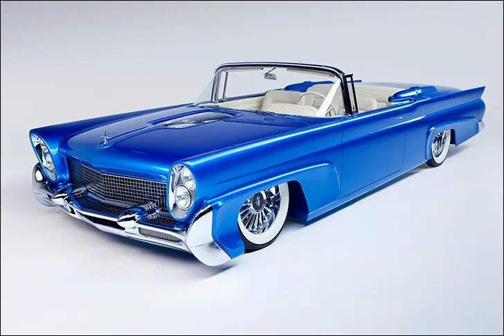
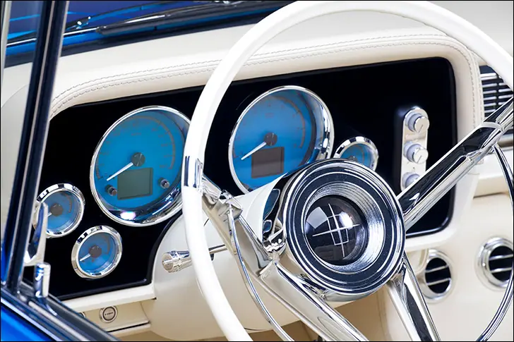
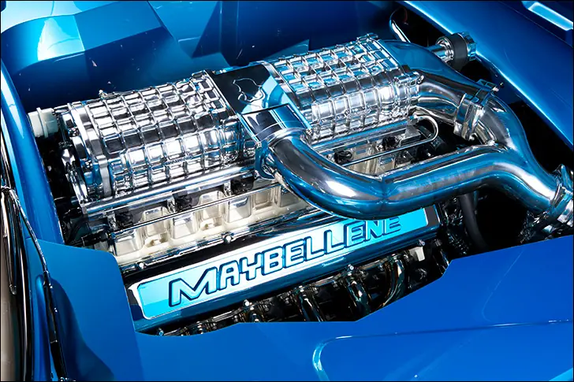
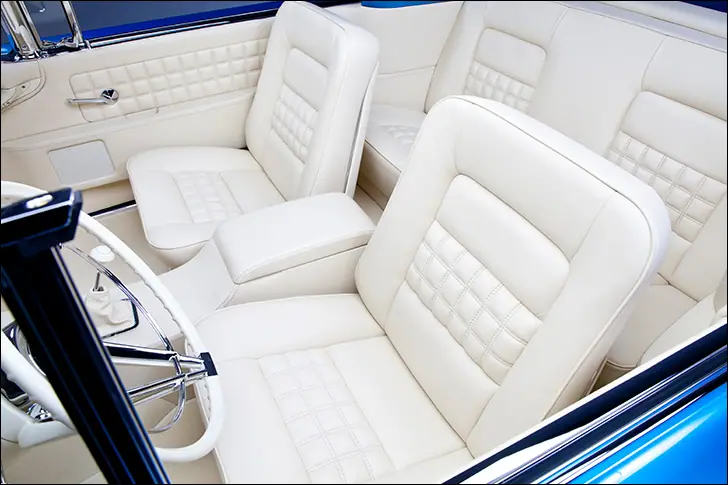
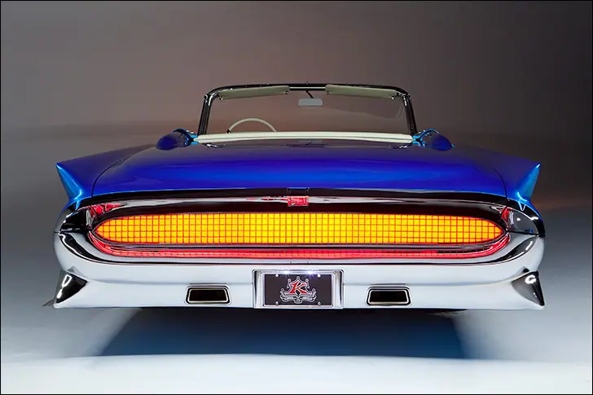
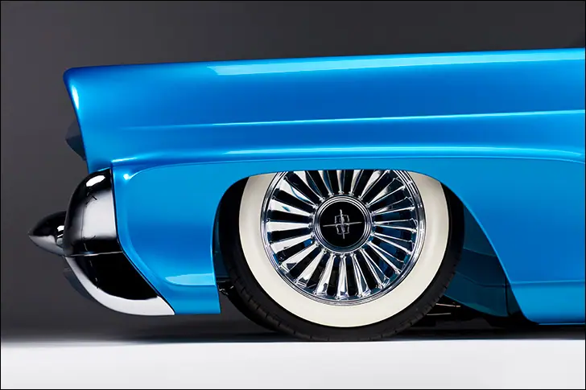

Kindig 58 Lincoln


Maybellene
Chuck Berry asked Maybellene, “why can’t you be true?” The ensuing car chase suggests that she didn’t want to be caught, or at least wanted to make sure her V8-Ford-driving-suitor was up to the task of catching her. Car owner Tad Leach had his own ideas for the perfect Maybellene, one that a home-brewed Ford wouldn’t chase down so easily.
Setting Dave Kindig loose on a 1958 Lincoln Continental is bound to yield a pretty crazy finished result, but I don’t think anyone fully expected the car shown on these pages. The searing “Teal Later” paint and bright white interior make quite a statement, and that’s not even the wildest part.
While Maybellene draws a crowd and leaves onlookers stunned, many are surprised to learn how little was done to the exterior. Not to say the Kindig-It Designs team didn’t put in work, but the ’58 Continental came stock with canted quad headlights, mesh grille and that unique front bumper. Its obvious FoMoCo was paying attention to what the custom car set was doing at the time. I suspect most car show goers have never seen, or at least studied, a stock ’58 Linc before; we could point out what was changed on a ’57 Chevy, but the line between OEM and Kindig is very blurry here. The majority of the time spent on the exterior of the car went toward reshaping the quarter panels to better match the concave detail on the fenders, creating a clear “bubble” viewing window in the hood, tightening up panel gaps and fitting the flush door handles. The rear tailpanel was changed also; new chrome mesh was created and installed in place of the stock, and in the process the original round taillights were lost. The new mesh conceals a giant red lens, which illuminates as one remarkable taillight. The end result is very 1950’s space-age.

A typical V8 wasn’t going to cut the mustard for Mr. Leach, so he set out searching for a poweplant just as wild as his Lincoln’s exterior. Leach landed on the Falconer V12, a custom built engine from Ryan Falconer Racing Engines. The all-aluminum mill boasts 600 cubic inches, MoTec fuel injection, and roots in aviation and marine markets. To push the envelope even further, two, yes two, Magnuson superchargers are perched in line, doing their part to boost the horsepower and torque ratings over 1,000 each. A venerable GM 4L80E transmission gets the unenviable task of handing out the Falconer’s orders.
Underpinnings for the big convertible are courtesy of Art Morrison. AccuAir was tapped for the air management system, putting life’s ups and downs into a sweet little control pad. A Ford 9” axle, the obvious choice for 1,000lb/ft in a big car, is located by a triangulated four-link system. Four wheel disc brakes from Wilwood get it done with six piston calipers, though you can hardly see them behind the one-off EVOD billet wheels. These rollers are 22” units, though the built-in white walls make them look more like 18s. Also unseen is the incredible width of the wheels; 8.5” up front and a whopping 12” in the back!

Being a topless beauty, the interior really needed to pop, so the big girl was sent over to JS Custom Interiors for the full treatment. Bucket seats from a ’64 T-Bird, the rear bench, a custom center console, and the dash were wrapped in white leather to match the fair carpet. Steering chores are handled by a restored Lincoln steering wheel, supported by an ididit steering column. Lokar put a shifter in the console for that overworked automatic, and yours truly put together a gauge package. Loosely based on the production HDX-2024, a set of instrument faces was printed to match the Kindig/AzkoNobel paint. The rest is up to Dave and Tad, as the LED backlighting can be changed with the built-in capacitive touch switches, or via mobile app, thanks to Bluetooth tech in the HDX system.

Maybellene really has it all; stunning good looks, agility, power to spare and comfort for days. What more could a guy ask for, really? Its the perfect “reacher” to hit the open road, as fast or slow as you’d like. Let that warm night air in and float your concerns away as the V12 rumbles you along, just keep your eyes peeled for a V8 Ford coming up on your tail.

Also on dakotadigital.com.